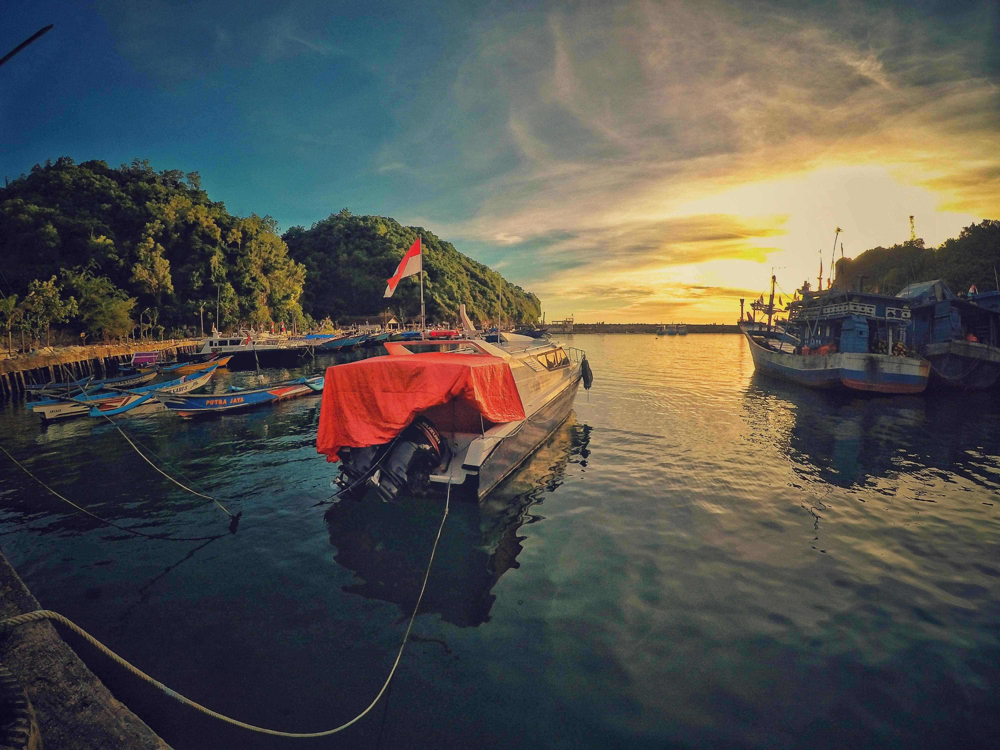
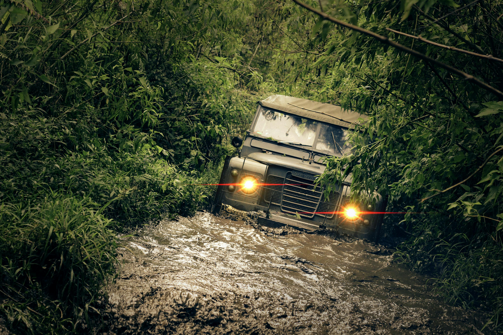
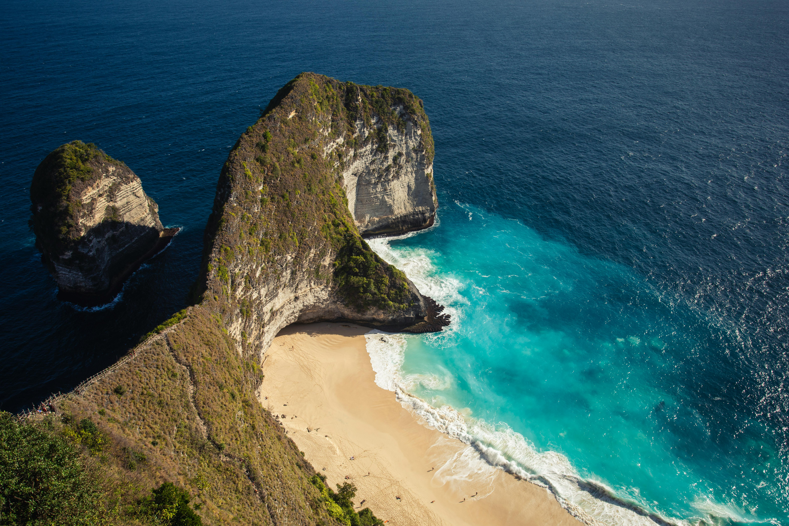

Gallery




Indonesia, the world's largest archipelago, is a vibrant and diverse nation in Southeast Asia, consisting of over 17,000 islands. With a population exceeding 273 million, it is the fourth most populous country globally and is known for its rich cultural tapestry, where over 300 ethnic groups and more than 700 languages coexist. Indonesia's landscapes range from lush rainforests and active volcanoes to idyllic beaches and coral reefs, making it a natural paradise. The country is the largest Muslim-majority nation, yet it is home to a variety of religions, including Hinduism, Christianity, and Buddhism. Indonesia's economy is one of the largest in the region, driven by natural resources, agriculture, and a burgeoning tourism industry, particularly in iconic destinations like Bali. Having gained independence in 1945 after centuries of Dutch colonization, Indonesia today is a dynamic democracy with a rich cultural heritage and a critical role in global affairs.
Indonesia's livelihood is deeply rooted in its diverse geography, natural resources, and cultural heritage. The majority of Indonesians are engaged in agriculture, with rice being the staple crop, along with palm oil, rubber, coffee, and spices. Fishing is also a vital part of the livelihood, especially in coastal communities across the archipelago. In rural areas, traditional crafts like batik-making, weaving, and wood carving provide additional income. Urban areas see more employment in manufacturing, services, and tourism, with cities like Jakarta and Bali being economic hubs. Despite rapid modernization, many Indonesians still rely on small-scale farming, local markets, and community-based trades for their daily sustenance. However, challenges such as unequal access to education and healthcare, coupled with environmental concerns like deforestation, impact the sustainability of livelihoods across the country.